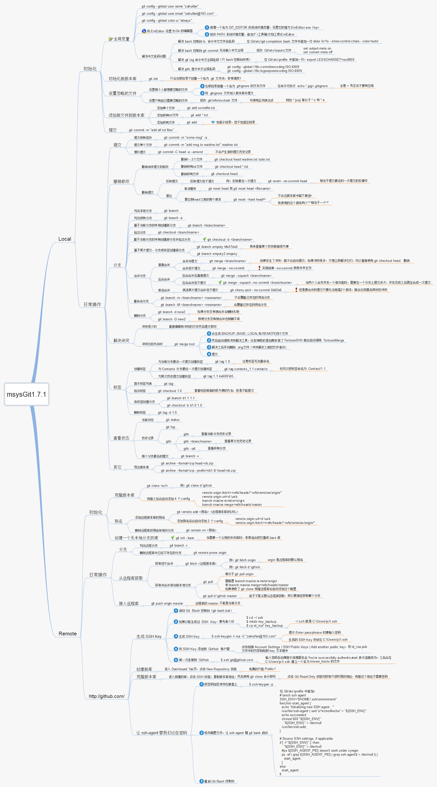

7.2.1. git 操作
7.2.1.1. git常用命令
7.2.1.1.1. 远程仓库相关命令
检出仓库
$ git clone git://github.com/hkdywg/test.git
查看远程仓库
$ git remote -v
添加远程仓库
$ git remote add [name] [url]
例
$ git remote add origin git://github.com/hkdywg/test.git
删除远程仓库
$ git remote rm [name]
例
$ git remote rm origin
修改远程仓库
$ git remote set-url --push [name] [newurl]
拉取远程仓库
$ git pull [remotename] [localbranchname]
推送远程仓库
$ git push [remotename] [localbranchname]
例
$ git push origin master
7.2.1.1.2. 分支相关操作
查看本地分支
$ git branch
查看远程分支
$ git branch -r
创建本地分支
$ git branch [name]
注: 新分支创建后不会自动切换为当前分支
切换分支
$ git checkout [name]
创建分支并立即切换到新分支
$ git checkout -b [name]
删除分支
$ git branch -d [name]
d选项只能删除已经参与了合并的分支，对于未合并的分支是无法删除的。如果想强制
删除一个分支，可以使用—D选项
合并分支
$ git merge [name]
将名称为[name]的分支与当前分支合并
创建远程分支（本地分支push到远程）：
$ git push origin [name]
删除远程分支
$ git push origin :heads/[name]
如果想把本地的某个分支test提交到远程仓库，并作为远程仓库的master分支，或者作为另外一个 名为test的分支，那可以按以下操作进行
$ git push origin test:master
提交本地test分支作为远程的master分支
$ git push origin test:test
提交本地test分支作为远程的test分支
如果想删除远程分支，类似以上操作，如果：左边的分支为空那么将删除：右边的远程分支
7.2.1.1.3. tag相关操作
查看版本
$ git tag
创建版本
$ git tag [name]
删除版本
$ git tag -d [name]
查看远程版本
$ git tag -r
创建远程版本（本地版本push到远程）
$ git push origin [name]
删除远程版本
$ git push origin :ref/tags/[name]
7.2.1.1.4. 子模块相关操作命令
添加子模块
$ git submodule add [url] [path]
例
$ git submodule add git://github.com/hkdywg/test.git src/main/sub
初始化子模块
$ git submodule init
只在首次检出仓库时运行一次就行
更新子模块
$ git submodule update
每次更新或切换分支都需要运行一下
删除子模块
$ git rm --cached [path]
编辑 .gitmodules 文件。将子模块的相关配置节点删除
编辑 .git/config 文件。将子模块的相关配置节点删除
手动删除子模块残留的目录
7.2.1.1.5. 忽略一些文件、文件夹不提交
在仓库根目录下创建名为 .gitignore 的文件，写入不需要提交的文件或者文件夹，每个元素占 一行即可，如
target
bin
7.2.1.1.6. 常用操作
git config --local user.email "hkdywg@163.com"
git config --local user.name "hkdywg"
git push --set-upstream origin wg/feature
git 命令思维导图
